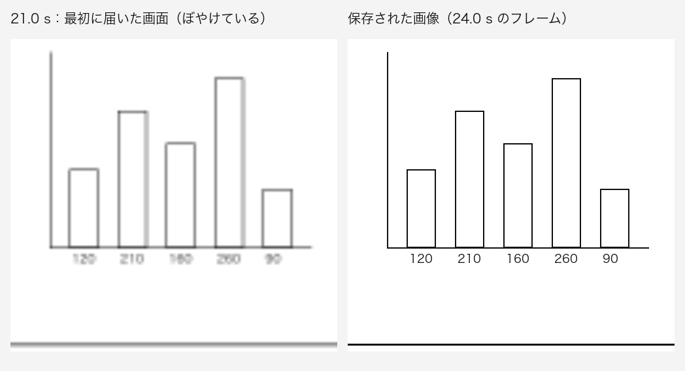
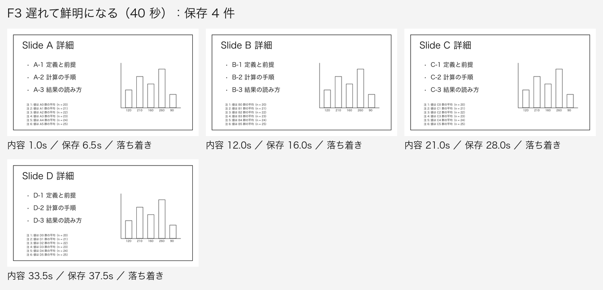
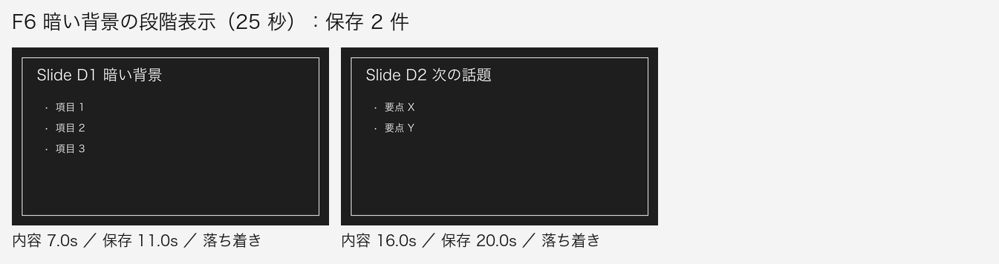
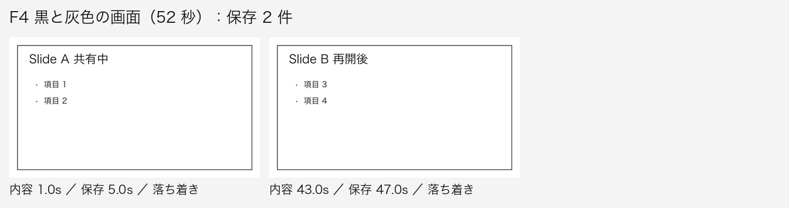
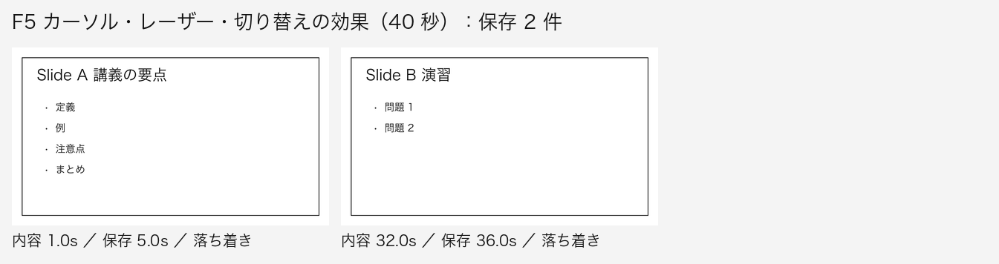
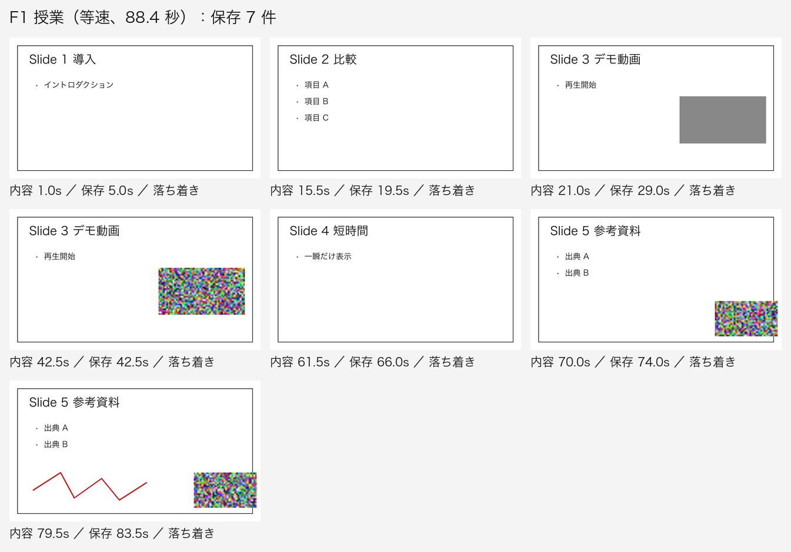
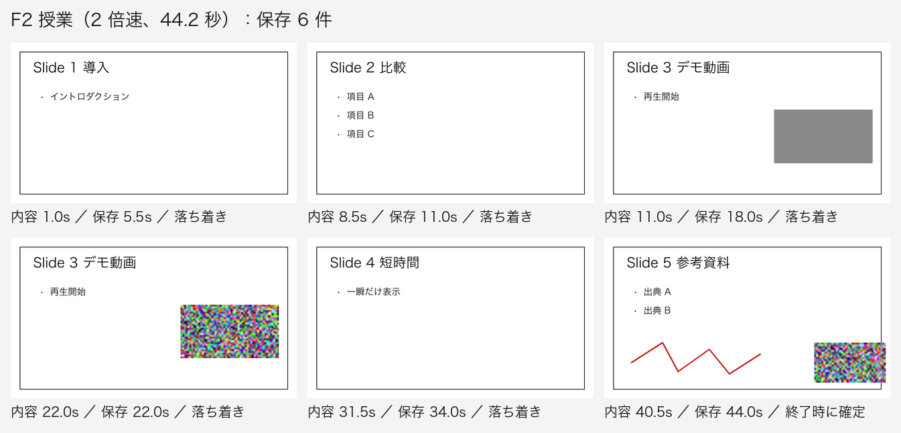
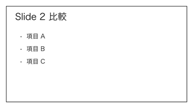

<title>ZoomSlidesPicker 判断シート</title>
<style>
  :root {
    --paper: #f3f3f2;
    --surface: #ffffff;
    --ink: #171717;
    --ink-2: #4f4f4f;
    --rule: #d8d8d8;
    --accent: #2c5d88;
    --accent-soft: #e7eef6;
    --on-accent: #ffffff;
    --danger: #a02c2c;
    --mock: #e9e9e8;
    --on-backdrop: #f4f4f4;
  }
  @media (prefers-color-scheme: dark) {
    :root:not([data-theme="light"]) {
      color-scheme: dark;
      --paper: #131313;
      --surface: #1c1c1c;
      --ink: #ececec;
      --ink-2: #a9a9a9;
      --rule: #353535;
      --accent: #90bbe6;
      --accent-soft: #1d2b39;
      --on-accent: #0e1822;
      --danger: #f0a3a3;
      --mock: #262626;
    }
  }
  :root[data-theme="dark"] {
    color-scheme: dark;
    --paper: #131313;
    --surface: #1c1c1c;
    --ink: #ececec;
    --ink-2: #a9a9a9;
    --rule: #353535;
    --accent: #90bbe6;
    --accent-soft: #1d2b39;
    --on-accent: #0e1822;
    --danger: #f0a3a3;
    --mock: #262626;
  }

  body {
    margin: 0;
    background: var(--paper);
    color: var(--ink);
    font-family: -apple-system, BlinkMacSystemFont, "Hiragino Sans", "Hiragino Kaku Gothic ProN", "Noto Sans JP", "Yu Gothic UI", Meiryo, sans-serif;
    font-size: 15px;
    line-height: 1.75;
  }
  .wrap { max-width: 760px; margin: 0 auto; padding: 0 16px; }
  .sr-only { position: absolute; width: 1px; height: 1px; overflow: hidden; clip: rect(0 0 0 0); white-space: nowrap; }
  :focus-visible { outline: 2px solid var(--accent); outline-offset: 2px; }
  h1, h2, h3 { text-wrap: balance; }
  p { margin: 0 0 12px; }
  ul, ol { margin: 0; padding-left: 1.25em; }
  li + li { margin-top: 6px; }
  code { font-family: ui-monospace, "SF Mono", Menlo, monospace; font-size: 0.9em; }
  .muted { color: var(--ink-2); }

  .top {
    position: sticky;
    top: env(safe-area-inset-top, 0px);
    z-index: 2;
    background: var(--paper);
    border-bottom: 1px solid var(--rule);
  }
  .top .wrap { display: flex; flex-wrap: wrap; justify-content: space-between; gap: 4px 16px; padding-block: 10px; }
  .top .round { margin: 0; font-size: 13px; color: var(--ink-2); }
  .status { display: flex; flex-wrap: wrap; gap: 4px 12px; }
  #progress { font-size: 13px; color: var(--ink-2); font-variant-numeric: tabular-nums; }
  #save { font-size: 13px; color: var(--ink-2); }
  #save.err { color: var(--danger); }

  header.intro { padding-block: 28px 8px; }
  h1 { font-size: 26px; line-height: 1.3; margin: 0 0 12px; font-weight: 700; letter-spacing: -0.01em; }
  .lede { font-size: 16px; margin-bottom: 8px; }
  .block h2 { font-size: 16px; margin: 28px 0 10px; font-weight: 700; }
  dl.state { display: grid; grid-template-columns: max-content 1fr; gap: 6px 16px; margin: 0; }
  dl.state dt { color: var(--ink-2); }
  dl.state dd { margin: 0; }
  @media (max-width: 520px) {
    dl.state { grid-template-columns: 1fr; }
    dl.state dd { margin-bottom: 8px; }
  }

  .finding { padding-block: 14px; border-top: 1px solid var(--rule); }
  .finding h3 { font-size: 15px; margin: 0 0 6px; }
  .finding p { color: var(--ink-2); }

  section.q { padding-block: 28px; border-top: 1px solid var(--rule); }
  .q-title { display: flex; align-items: baseline; gap: 10px; margin: 0 0 6px; font-size: 19px; line-height: 1.4; font-weight: 700; }
  .qid { font-size: 13px; color: var(--ink-2); font-variant-numeric: tabular-nums; font-weight: 500; letter-spacing: 0.02em; }
  .ctx { color: var(--ink-2); margin-bottom: 16px; }
  fieldset.opts { border: 0; margin: 0; padding: 0; min-width: 0; display: grid; gap: 12px; }
  .opt {
    display: grid;
    gap: 10px;
    padding: 14px;
    background: var(--surface);
    border: 1px solid var(--rule);
    border-radius: 8px;
    min-width: 0;
  }
  .opt:has(input:checked) { border-color: var(--accent); box-shadow: inset 0 0 0 1px var(--accent); }
  .opt label { display: grid; grid-template-columns: auto 1fr; gap: 0 12px; align-items: start; cursor: pointer; }
  .opt input { margin: 6px 0 0; width: 18px; height: 18px; accent-color: var(--accent); }
  .opt-title { font-weight: 700; }
  .opt-desc { display: block; font-weight: 400; color: var(--ink-2); margin-top: 2px; }
  .opt-why { display: block; margin-top: 4px; font-size: 14px; }
  .rec {
    display: inline-block;
    margin-left: 8px;
    padding: 0 6px;
    font-size: 12px;
    font-weight: 600;
    line-height: 1.6;
    color: var(--accent);
    border: 1px solid var(--accent);
    border-radius: 4px;
    vertical-align: 1px;
  }
  figure.shots { margin: 0; display: grid; gap: 10px; }
  figure.shots figcaption { font-size: 13px; color: var(--ink-2); }
  button.zoomable { all: unset; display: block; cursor: zoom-in; max-width: 100%; border-radius: 6px; }
  button.zoomable img, figure img {
    display: block;
    width: 100%;
    max-width: 100%;
    height: auto;
    background: var(--surface);
    border: 1px solid var(--rule);
    border-radius: 6px;
  }
  .memo { margin-top: 14px; }
  .memo label { display: block; font-size: 13px; color: var(--ink-2); margin-bottom: 4px; }
  textarea {
    display: block;
    width: 100%;
    box-sizing: border-box;
    font: inherit;
    color: var(--ink);
    background: var(--surface);
    border: 1px solid var(--rule);
    border-radius: 6px;
    padding: 8px 10px;
    resize: vertical;
  }
  .note { font-size: 14px; color: var(--ink-2); margin-top: 10px; }

  details.doc { margin-top: 16px; background: var(--surface); border: 1px solid var(--rule); border-radius: 8px; }
  details.doc > summary { cursor: pointer; padding: 12px 14px; font-weight: 600; }
  .doc-body { padding: 0 16px 16px; overflow-wrap: anywhere; }
  .doc-body h1 { font-size: 20px; margin: 8px 0 12px; }
  .doc-body h2 { font-size: 17px; margin: 22px 0 8px; }
  .doc-body h3 { font-size: 15px; margin: 18px 0 6px; }
  .doc-body li + li { margin-top: 4px; }
  .doc-body ul, .doc-body ol { margin-bottom: 10px; }
  .scroll { overflow-x: auto; margin-bottom: 12px; }
  .doc-body table { border-collapse: collapse; font-size: 14px; min-width: 100%; }
  .doc-body th, .doc-body td { border: 1px solid var(--rule); padding: 4px 8px; text-align: left; vertical-align: top; }
  pre.diff {
    margin: 0;
    padding: 12px 14px;
    overflow-x: auto;
    font-family: ui-monospace, "SF Mono", Menlo, monospace;
    font-size: 12px;
    line-height: 1.55;
    white-space: pre;
  }

  .mock {
    background: var(--mock);
    border: 1px dashed var(--ink-2);
    border-radius: 8px;
    padding: 12px;
    display: grid;
    gap: 10px;
    min-width: 0;
  }
  .mock-tag { font-size: 12px; color: var(--ink-2); letter-spacing: 0.04em; }
  .mock-bar {
    display: flex;
    justify-content: flex-end;
    align-items: center;
    gap: 8px;
    padding: 4px 10px;
    background: var(--surface);
    border-radius: 4px;
    font-size: 12px;
    font-variant-numeric: tabular-nums;
  }
  .mock-icon { width: 12px; height: 12px; border-radius: 3px; background: var(--ink); }
  .mock-pop {
    justify-self: end;
    width: min(280px, 100%);
    box-sizing: border-box;
    background: var(--surface);
    border: 1px solid var(--rule);
    border-radius: 10px;
    padding: 12px;
    display: grid;
    gap: 10px;
  }
  .mock-row { display: flex; flex-wrap: wrap; justify-content: space-between; align-items: center; gap: 6px; font-size: 13px; }
  .mock-row .n { font-variant-numeric: tabular-nums; }
  .mock-thumb { display: block; width: 100%; height: auto; border-radius: 4px; border: 1px solid var(--rule); }
  .mock-primary {
    padding: 6px 10px;
    text-align: center;
    border-radius: 6px;
    background: var(--accent);
    color: var(--on-accent);
    font-size: 13px;
    font-weight: 600;
  }
  .mock-secondary { display: flex; flex-wrap: wrap; gap: 6px; }
  .mock-secondary span {
    padding: 3px 8px;
    border: 1px solid var(--rule);
    border-radius: 6px;
    font-size: 12px;
  }
  .mock-win { background: var(--surface); border: 1px solid var(--rule); border-radius: 10px; overflow: hidden; }
  .mock-title { padding: 6px 10px; font-size: 12px; color: var(--ink-2); border-bottom: 1px solid var(--rule); }
  .mock-body { display: grid; grid-template-columns: minmax(0, 3fr) minmax(0, 2fr); gap: 12px; padding: 12px; }
  .mock-body .side { display: grid; gap: 8px; align-content: start; }
  @media (max-width: 520px) { .mock-body { grid-template-columns: 1fr; } }

  dialog.zoom { border: 0; padding: 0; background: transparent; max-width: min(96vw, 1400px); }
  dialog.zoom::backdrop { background: rgba(0, 0, 0, 0.72); }
  dialog.zoom .zoom-box { display: grid; gap: 8px; }
  dialog.zoom img { display: block; width: 100%; height: auto; background: var(--surface); border-radius: 6px; }
  dialog.zoom .zoom-bar { display: flex; justify-content: space-between; align-items: center; gap: 12px; color: var(--on-backdrop); font-size: 14px; }
  dialog.zoom button {
    font: inherit;
    padding: 6px 12px;
    border-radius: 6px;
    border: 1px solid var(--on-backdrop);
    background: transparent;
    color: var(--on-backdrop);
    cursor: pointer;
  }

  .other textarea { min-height: 96px; }
  .copy-row { display: flex; flex-wrap: wrap; align-items: center; gap: 12px; margin-top: 12px; }
  .btn {
    font: inherit;
    padding: 8px 16px;
    border-radius: 6px;
    border: 1px solid var(--accent);
    background: var(--accent);
    color: var(--on-accent);
    cursor: pointer;
  }
  #copy-out { margin-top: 12px; min-height: 180px; font-size: 13px; line-height: 1.6; font-family: ui-monospace, "SF Mono", Menlo, monospace; }
  footer.next { padding-block: 24px 48px; border-top: 1px solid var(--rule); margin-top: 28px; }
</style>

<header class="top">
  <div class="wrap">
    <p class="round">ラウンド 2 ・ 仕様の確定</p>
    <div class="status">
      <span id="progress">回答 0 / 9</span>
      <span id="save" role="status" aria-live="polite">保存先を確かめています…</span>
    </div>
  </div>
</header>

<main class="wrap">
  <header class="intro">
    <h1>ZoomSlidesPicker 判断シート</h1>
    <p class="lede">ラウンド 1 の回答をもとに、SPEC（何を作るか）、ACCEPTANCE（合格の条件）、design_brief（見た目の決まりと文言）の草案を作りました。ここで GO が出れば仕様を確定し、次の段階（テストを書く criteria）に進めます。質問は 9 問です。推奨が先頭にあり、選ぶと自動で保存されます。</p>
  </header>

  <section class="block" aria-labelledby="h-state">
    <h2 id="h-state">作業の状態</h2>
    <dl class="state">
      <dt>草案</dt>
      <dd>SPEC、ACCEPTANCE、design_brief、設定の変更は、ブランチ <code>intake/r2-spec</code>（<code>36f0210</code>）。main には未マージ。</dd>
      <dt>試作と fixture</dt>
      <dd>ブランチ <code>intake/r2-samples</code>（<code>7ce0134</code>）。未マージ。</dd>
      <dt>本体</dt>
      <dd>未着手。</dd>
      <dt>Windows の確認</dt>
      <dd>結果待ち（あなたが実行中）。結果で Windows の撮り方（xcap の既定か <code>wgc</code> か）が決まります。質問ではありません。</dd>
      <dt>あなたの確認（任意）</dt>
      <dd>SharePoint で録画ファイルを受け取れるか（R1-4 の続き）。受け取れるなら、v2 で録画からの抽出と時間を比べます。</dd>
    </dl>
  </section>

  <section class="block" aria-labelledby="h-found">
    <h2 id="h-found">ラウンド 1 の後に分かったこと</h2>
    <p class="muted">あなたの選択（R1-5 b、R1-6 a、R1-7 a）で試作を作り直し、6 本の fixture で確かめました。サンプルは合成の画面で、実際の授業の画面ではありません。</p>

    <div class="finding">
      <h3>ぼやけてから鮮明になる画面（F3）</h3>
      <p>画面共有は、切り替えの直後にぼやけて、少し遅れて鮮明になることがあります。最初の試作は、鮮明になる変化を別のスライドとして扱い、4 件のはずが 6 件になりました。「何も消えておらず、細かさが 1.2 倍以上になった変化は同じスライド」という規則を足し、各スライドの鮮明な版だけを保存するようにしました。</p>
      <figure class="shots">
        <button type="button" class="zoomable" data-src="assets/r2/f3_crop.png" data-alt="最初に届いたぼやけた画面と、保存された鮮明な画像">
          
        </button>
        <figcaption>左：最初に届いた画面（ぼやけている）。右：保存された画像。</figcaption>
        <button type="button" class="zoomable" data-src="assets/r2/montage_F3.png" data-alt="F3 で保存された 4 件">
          
        </button>
      </figure>
    </div>

    <div class="finding">
      <h3>暗い背景のスライド（F6）</h3>
      <p>暗い背景では、箇条書きが増えると画面が明るくなります。前の規則では、これを「消えた」と見て別のスライドにするおそれがありました。背景の明るさを基準にしたので、3 つの箇条書きは 1 枚にまとまります。</p>
      <figure class="shots">
        <button type="button" class="zoomable" data-src="assets/r2/montage_F6.png" data-alt="F6 で保存された 2 件">
          
        </button>
      </figure>
    </div>

    <div class="finding">
      <h3>黒と灰色の画面、カーソルとレーザー（F4、F5）</h3>
      <p>単色の画面は保存せず、10 秒続いたら 1 回知らせます。カーソル、レーザー、切り替えの効果（0.6 秒の重ね合わせ）では保存されず、保存したスライドにカーソルは写りません。</p>
      <figure class="shots">
        <button type="button" class="zoomable" data-src="assets/r2/montage_F4.png" data-alt="F4 で保存された 2 件">
          
        </button>
        <button type="button" class="zoomable" data-src="assets/r2/montage_F5.png" data-alt="F5 で保存された 2 件">
          
        </button>
      </figure>
    </div>

    <div class="finding">
      <h3>あなたの選択での授業（F1）と 2 倍速（F2）</h3>
      <p>F1 は 7 件です。R1-5 b のとおり、動画が止まった後の見た目が 1 枚入ります。F2（2 倍速）は 6 件です。追記の間隔が短くなるので、スライド 5 の箇条書きとペンの書き込みが 1 枚にまとまります。mp4 から読んだ F1（R1-9 のモード）も、同じ 7 件でした。</p>
      <figure class="shots">
        <button type="button" class="zoomable" data-src="assets/r2/montage_F1.png" data-alt="F1 で保存された 7 件">
          
        </button>
        <button type="button" class="zoomable" data-src="assets/r2/montage_F2.png" data-alt="F2 で保存された 6 件">
          
        </button>
      </figure>
    </div>

    <div class="finding">
      <h3>直したこと</h3>
      <p>F4 の「戻り」の期待値を 1 件から 0 件に直しました。黒い画面の後に同じスライドに戻るのは、前のスライドへの戻りではないからです。期待値は実行の前に決めていましたが、これは実行の後で定義の誤りに気づいて直しました。</p>
      <p>メモリの既定を変えました。保留中のスライドの画像を 1 枚持ちます（2000 × 1400 の範囲で約 11 MB）。前の「保存する瞬間だけ」では、別のスライドに切り替わった時点で、保存すべき画像がもう画面にありません。</p>
    </div>
  </section>

  <form id="questions" novalidate>

    <section class="q" data-q="R2-1" data-kind="radio" aria-labelledby="t-R2-1">
      <h2 class="q-title" id="t-R2-1"><span class="qid">R2-1</span>アプリの形</h2>
      <p class="ctx">「開始」「停止」などの操作をどこに置くかです。色や字の大きさは、この後の design gate で決めます。下の図はどちらもモックです。</p>
      <fieldset class="opts">
        <legend class="sr-only">アプリの形</legend>
        <div class="opt">
          <label><input type="radio" name="R2-1" value="a" data-label="a　常駐型">
            <span><span class="opt-title">a　常駐型<span class="rec">推奨</span></span>
              <span class="opt-desc">常駐アイコンを押すと、小さなパネルが出る。授業中は画面を占めない。Mac は Dock にも出さない。</span>
              <span class="opt-why">授業中は Zoom などの窓を大きく使うので、邪魔にならない。</span>
            </span>
          </label>
          <div class="mock" aria-label="常駐型のモック">
            <span class="mock-tag">モック</span>
            <div class="mock-bar"><span class="mock-icon" aria-hidden="true"></span><span>12</span></div>
            <div class="mock-pop">
              <div class="mock-row"><span>保存中</span><span class="n">12 枚</span></div>
              
              <div class="mock-primary">停止</div>
              <div class="mock-secondary"><span>一時停止</span><span>今すぐ保存</span><span>直前の保存を取り消す</span></div>
              <div class="mock-row"><span class="muted">保存先を開く</span><span class="muted">設定</span></div>
            </div>
          </div>
        </div>
        <div class="opt">
          <label><input type="radio" name="R2-1" value="b" data-label="b　窓型">
            <span><span class="opt-title">b　窓型</span>
              <span class="opt-desc">普通の窓に、範囲のプレビューと操作を並べる。閉じると常駐アイコンに隠れる。範囲が大きく見えるが、画面の場所を取る。</span>
            </span>
          </label>
          <div class="mock" aria-label="窓型のモック">
            <span class="mock-tag">モック</span>
            <div class="mock-win">
              <div class="mock-title">ZoomSlidesPicker</div>
              <div class="mock-body">
                
                <div class="side">
                  <div class="mock-row"><span>保存中</span><span class="n">12 枚</span></div>
                  <div class="mock-primary">停止</div>
                  <div class="mock-secondary"><span>一時停止</span><span>今すぐ保存</span><span>直前の保存を取り消す</span></div>
                </div>
              </div>
            </div>
          </div>
        </div>
      </fieldset>
      <div class="memo"><label for="memo-R2-1">メモ（任意）</label><textarea id="memo-R2-1" rows="2"></textarea></div>
    </section>

    <section class="q" data-q="R2-2" data-kind="radio" aria-labelledby="t-R2-2">
      <h2 class="q-title" id="t-R2-2"><span class="qid">R2-2</span>見た目の決まりと主な文言（design_brief.md）</h2>
      <p class="ctx">見た目の「すること・しないこと」と、画面と通知に出る主な文言（日本語と英語）です。色や字の大きさは design gate で決めます。</p>
      <fieldset class="opts">
        <legend class="sr-only">design_brief.md</legend>
        <div class="opt">
          <label><input type="radio" name="R2-2" value="go" data-label="この内容で">
            <span><span class="opt-title">この内容で<span class="rec">推奨</span></span></span>
          </label>
        </div>
        <div class="opt">
          <label><input type="radio" name="R2-2" value="fix" data-label="直してから">
            <span><span class="opt-title">直してから</span>
              <span class="opt-desc">直す点をメモに書いてください。</span>
            </span>
          </label>
        </div>
      </fieldset>
      <details class="doc">
        <summary>design_brief.md を開く</summary>
        <div class="doc-body" data-md="round2/design_brief.md">読み込んでいます…</div>
      </details>
      <div class="memo"><label for="memo-R2-2">メモ（任意）</label><textarea id="memo-R2-2" rows="2"></textarea></div>
    </section>

    <section class="q" data-q="R2-3" data-kind="check" aria-labelledby="t-R2-3">
      <h2 class="q-title" id="t-R2-3"><span class="qid">R2-3</span>v1 に足す小さな機能（複数選択）</h2>
      <p class="ctx">ラウンド 1 で「保存一覧の画面」を入れなかったので、Finder やエクスプローラーで画像を消した後に、PDF を作り直す手段がありません。チェックが入っているのは推奨です。</p>
      <fieldset class="opts">
        <legend class="sr-only">v1 に足す小さな機能</legend>
        <div class="opt"><label><input type="checkbox" name="R2-3" value="rebuild-pdf" checked data-label="PDF を作り直す（直前のセッション）"><span><span class="opt-title">PDF を作り直す（直前のセッション）</span><span class="opt-desc">フォルダに残っている画像だけで PDF を作り直す。</span></span></label></div>
        <div class="opt"><label><input type="checkbox" name="R2-3" value="open-folder" checked data-label="保存先のフォルダを開く"><span><span class="opt-title">保存先のフォルダを開く</span><span class="opt-desc">パネルと、停止の通知から開ける。</span></span></label></div>
      </fieldset>
      <div class="memo"><label for="memo-R2-3">メモ（任意）</label><textarea id="memo-R2-3" rows="2"></textarea></div>
    </section>

    <section class="q" data-q="R2-4" data-kind="radio" aria-labelledby="t-R2-4">
      <h2 class="q-title" id="t-R2-4"><span class="qid">R2-4</span>SPEC.md（何を作るか）</h2>
      <p class="ctx">全体の仕様です。判断の正本は DECISIONS.md で、食い違えばそちらが優先します。R2-1 と R2-3 の答えは、GO の後に SPEC に反映します。</p>
      <fieldset class="opts">
        <legend class="sr-only">SPEC.md</legend>
        <div class="opt">
          <label><input type="radio" name="R2-4" value="go" data-label="GO">
            <span><span class="opt-title">GO（この内容で確定）<span class="rec">推奨</span></span></span>
          </label>
        </div>
        <div class="opt">
          <label><input type="radio" name="R2-4" value="fix" data-label="直してから">
            <span><span class="opt-title">直してから</span>
              <span class="opt-desc">直す点をメモに書いてください。直した版を次のラウンドで見せます。</span>
            </span>
          </label>
        </div>
      </fieldset>
      <details class="doc">
        <summary>SPEC.md を開く</summary>
        <div class="doc-body" data-md="round2/SPEC.md">読み込んでいます…</div>
      </details>
      <div class="memo"><label for="memo-R2-4">メモ（任意）</label><textarea id="memo-R2-4" rows="2"></textarea></div>
    </section>

    <section class="q" data-q="R2-5" data-kind="radio" aria-labelledby="t-R2-5">
      <h2 class="q-title" id="t-R2-5"><span class="qid">R2-5</span>ACCEPTANCE.md（合格の条件）</h2>
      <p class="ctx">A〜C は機械で判定し、D は実機で人が実行し、E は人が確かめます。A の数値は、すべて試作で通ることを確かめました。</p>
      <fieldset class="opts">
        <legend class="sr-only">ACCEPTANCE.md</legend>
        <div class="opt">
          <label><input type="radio" name="R2-5" value="go" data-label="GO">
            <span><span class="opt-title">GO（この内容で確定）<span class="rec">推奨</span></span></span>
          </label>
        </div>
        <div class="opt">
          <label><input type="radio" name="R2-5" value="fix" data-label="直してから">
            <span><span class="opt-title">直してから</span>
              <span class="opt-desc">直す点をメモに書いてください。</span>
            </span>
          </label>
        </div>
      </fieldset>
      <details class="doc">
        <summary>ACCEPTANCE.md を開く</summary>
        <div class="doc-body" data-md="round2/ACCEPTANCE.md">読み込んでいます…</div>
      </details>
      <div class="memo"><label for="memo-R2-5">メモ（任意）</label><textarea id="memo-R2-5" rows="2"></textarea></div>
    </section>

    <section class="q" data-q="R2-6" data-kind="radio" aria-labelledby="t-R2-6">
      <h2 class="q-title" id="t-R2-6"><span class="qid">R2-6</span>一行の目的（CLAUDE.md）</h2>
      <p class="ctx">テンプレートでは、あなたが書く欄です。案を 2 つ用意しました。</p>
      <fieldset class="opts">
        <legend class="sr-only">一行の目的</legend>
        <div class="opt">
          <label><input type="radio" name="R2-6" value="a" data-label="案 1">
            <span><span class="opt-title">案 1（SPEC の目的と同じ文）<span class="rec">推奨</span></span>
              <span class="opt-desc">授業の画面（Zoom のライブ、SharePoint の動画の再生など）から、先生がスライドを切り替えるたびにその画像を自動で保存し、授業の後にスライド一式（PNG と PDF）を手元に残す。Mac と Windows で動く。</span>
              <span class="opt-why">SPEC と同じ文なので、食い違わない。</span>
            </span>
          </label>
        </div>
        <div class="opt">
          <label><input type="radio" name="R2-6" value="b" data-label="案 2">
            <span><span class="opt-title">案 2（短い文）</span>
              <span class="opt-desc">授業のスライドを、切り替わるたびに自動で保存する、Mac と Windows の常駐アプリ。</span>
            </span>
          </label>
        </div>
        <div class="opt">
          <label><input type="radio" name="R2-6" value="c" data-label="書き直す">
            <span><span class="opt-title">書き直す</span>
              <span class="opt-desc">メモに文を書いてください。</span>
            </span>
          </label>
        </div>
      </fieldset>
      <div class="memo"><label for="memo-R2-6">メモ（任意）</label><textarea id="memo-R2-6" rows="2"></textarea></div>
    </section>

    <section class="q" data-q="R2-7" data-kind="radio" aria-labelledby="t-R2-7">
      <h2 class="q-title" id="t-R2-7"><span class="qid">R2-7</span>道具の提案</h2>
      <p class="ctx">テンプレートの規則で、道具は「事実と照らせるもの」か「決まった検査をするもの」だけを提案します。入れるのはあなたです（承認すると、<code>state/TOOLING.md</code> と <code>state/init-tools.sh</code> を書きます。実行はあなた）。</p>
      <fieldset class="opts">
        <legend class="sr-only">道具の提案</legend>
        <div class="opt">
          <label><input type="radio" name="R2-7" value="a" data-label="権限の確認役を入れる">
            <span><span class="opt-title">権限の確認役を入れる<span class="rec">推奨</span></span>
              <span class="opt-desc">voice-transcript の <code>tauri-capability-reviewer</code>（サブエージェント）を、このリポジトリの場所に合わせて写す。Tauri の権限の設定（開けるフォルダの範囲など）を、Tauri が生成した ACL の一覧と照らして確かめる。</span>
              <span class="opt-why">このアプリはフォルダを開き、ファイルを書くので、権限の広げすぎを機械的な一覧で確かめられる。</span>
            </span>
          </label>
        </div>
        <div class="opt">
          <label><input type="radio" name="R2-7" value="b" data-label="何も入れない">
            <span><span class="opt-title">何も入れない</span></span>
          </label>
        </div>
      </fieldset>
      <p class="note">提案しないもの：<code>tauri-command-scaffold</code>（雛形を作るだけで、検査ではない）。新しい MCP（Playwright と context7 は、もう使える）。</p>
      <div class="memo"><label for="memo-R2-7">メモ（任意）</label><textarea id="memo-R2-7" rows="2"></textarea></div>
    </section>

    <section class="q" data-q="R2-8" data-kind="radio" aria-labelledby="t-R2-8">
      <h2 class="q-title" id="t-R2-8"><span class="qid">R2-8</span>設定ファイルの変更</h2>
      <p class="ctx">CLAUDE.md（名前、目的、言語、コマンド）、pipeline.yaml（名前、UI あり）、<code>.claude/settings.json</code>（cargo などの許可）、<code>.gitignore</code>（ビルドの出力など）、<code>scripts/gates.sh</code>（cargo と pnpm の両方を検査）。ヘッドレスの build は、許可にないコマンドを確かめられずに止まるので、先に足します。</p>
      <fieldset class="opts">
        <legend class="sr-only">設定ファイルの変更</legend>
        <div class="opt">
          <label><input type="radio" name="R2-8" value="go" data-label="この内容で">
            <span><span class="opt-title">この内容で<span class="rec">推奨</span></span></span>
          </label>
        </div>
        <div class="opt">
          <label><input type="radio" name="R2-8" value="fix" data-label="直してから">
            <span><span class="opt-title">直してから</span>
              <span class="opt-desc">直す点をメモに書いてください。</span>
            </span>
          </label>
        </div>
      </fieldset>
      <details class="doc">
        <summary>変更の差分を開く</summary>
        <pre class="diff" data-text="round2/config.diff">読み込んでいます…</pre>
      </details>
      <div class="memo"><label for="memo-R2-8">メモ（任意）</label><textarea id="memo-R2-8" rows="2"></textarea></div>
    </section>

    <section class="q" data-q="R2-9" data-kind="radio" aria-labelledby="t-R2-9">
      <h2 class="q-title" id="t-R2-9"><span class="qid">R2-9</span>GO の後</h2>
      <p class="ctx">R2-4 と R2-5 が GO だったときに、何をするかです。</p>
      <fieldset class="opts">
        <legend class="sr-only">GO の後</legend>
        <div class="opt">
          <label><input type="radio" name="R2-9" value="a" data-label="取り込んで intake を完了する">
            <span><span class="opt-title">取り込んで intake を完了する<span class="rec">推奨</span></span>
              <span class="opt-desc">草案、試作と fixture、キャプチャの確認の 3 つのブランチを main にマージする（<code>--no-ff</code>、ローカルのみで push はしない）。<code>state/done/intake</code> と <code>state/has_ui</code> を作る。criteria 以降は、あなたが <code>sh scripts/run.sh from criteria</code> で始める。</span>
            </span>
          </label>
        </div>
        <div class="opt">
          <label><input type="radio" name="R2-9" value="b" data-label="マージの前に差分を見せる">
            <span><span class="opt-title">マージの前に差分を見せる</span></span>
          </label>
        </div>
      </fieldset>
      <div class="memo"><label for="memo-R2-9">メモ（任意）</label><textarea id="memo-R2-9" rows="2"></textarea></div>
    </section>

    <p class="note">選ばずに文章だけ書くと、その質問の答えは「その他」として保存されます。</p>
  </form>

  <section class="block" aria-labelledby="h-decided">
    <h2 id="h-decided">聞かずに決めたこと（ラウンド 2）</h2>
    <p class="muted">変えたいものがあれば、下の「その他」に書いてください。</p>
    <ol>
      <li>ぼやけてから鮮明になる変化は同じスライドとして扱い、各スライドの最も鮮明なフレームを保存する（F3）。</li>
      <li>追記と別のスライドは、背景の明るさを基準に見分ける（F6）。</li>
      <li>単色の画面は保存しない。10 秒続いたら 1 回知らせる（F4）。</li>
      <li>「戻り」は、前に保存したスライドに戻ったときだけ記録する。直前のスライドが続くだけなら記録しない。</li>
      <li>保留中のスライドの画像を 1 枚持つ（メモリの既定の変更。上の「直したこと」）。</li>
      <li>今すぐ保存、取り消し、一時停止の細かい動き（SPEC の判定 11〜13）。取り消した画像はごみ箱に移し、同じセッションでは同じ状態を再び保存しない。一時停止中も経過時間は進む。</li>
      <li>比較の周期は既定 0.5 秒（設定で 0.5〜5 秒）。ほかの数値は内部の定数。</li>
      <li>保存先、フォルダ名、ファイル名（SPEC の「出力」）。</li>
      <li>ショートカットの既定値（設定で変えられる）。</li>
      <li>枚数の表示は、Windows ではツールチップ（Windows はアイコンの横に文字を出せない。Tauri の仕様）。Mac は Dock に出さない。</li>
      <li>mp4 モードは PC の ffmpeg を使う（同梱しない）。</li>
      <li>パネルと設定の窓は、開くときに作り、閉じたら破棄する（メモリのため）。</li>
      <li>構成（Cargo の分け方）と、テストのデータの持ち方（解析画像の列を PNG で入れる。約 0.7 MB）。</li>
      <li>Windows の撮り方は、WINDOWS-CHECK の結果で決める。</li>
      <li>Zoom の操作バーなど、一時的に重なるものは v1 では扱わない（既知の制約）。</li>
    </ol>
  </section>

  <section class="block" aria-labelledby="h-verify">
    <h2 id="h-verify">確かめた範囲</h2>
    <ul>
      <li>試作（Python）で、F1〜F6 の 57 項目がすべて合格（<code>check_r2.py</code>）。mp4 から読んだ F1 も同じ結果（<code>mp4_check.py</code>）。</li>
      <li>測っていない：Rust での実装（criteria と build で作る）、Windows（確認中）、実際の授業の画面、Mac の全画面表示の窓。</li>
      <li>期待値は実行の前に決めました。ただし F4 の「戻り」の期待値は実行の後で直し、F3 の規則は実行の結果を見て足しました。この試作の合格は、決めた動きの確認であって、実際の授業での精度の保証ではありません。</li>
    </ul>
  </section>

  <section class="block other" aria-labelledby="h-other">
    <h2 id="h-other">その他</h2>
    <p class="muted">質問にない意見、決めたことへの修正、見つけたこと。</p>
    <div class="memo"><label for="misc">自由記述</label><textarea id="misc" rows="4"></textarea></div>
  </section>

  <footer class="next">
    <p>保存は選ぶたびに行われます。保存できないときは、下の「回答をコピー」で控えを取ってください。</p>
    <p>すべて終わったら、チャットに「回答しました」と書いてください。決まったことを返し、DECISIONS.md に原文で書きます。</p>
    <div class="copy-row">
      <button type="button" class="btn" id="copy">回答をコピー</button>
      <span id="copy-note" class="muted" role="status"></span>
    </div>
    <textarea id="copy-out" readonly hidden aria-label="回答の控え"></textarea>
  </footer>
</main>

<dialog class="zoom" id="zoom" aria-labelledby="zoom-cap">
  <div class="zoom-box">
    
    <div class="zoom-bar">
      <span id="zoom-cap"></span>
      <button type="button" id="zoom-close">閉じる</button>
    </div>
  </div>
</dialog>

<script src="https://cdnjs.cloudflare.com/ajax/libs/marked/15.0.12/marked.min.js"></script>
<script>
(function () {
  "use strict";

  var DOC_PATH = "answers/round2";
  var DRAFT_KEY = "zsp-decision-sheet-round2";
  var sections = Array.prototype.slice.call(document.querySelectorAll("section.q"));
  var main = document.querySelector("main");
  var progressEl = document.getElementById("progress");
  var statusEl = document.getElementById("save");
  var miscEl = document.getElementById("misc");
  var copyBtn = document.getElementById("copy");
  var copyNote = document.getElementById("copy-note");
  var copyOut = document.getElementById("copy-out");
  var dialog = document.getElementById("zoom");
  var zoomImg = document.getElementById("zoom-img");
  var zoomCap = document.getElementById("zoom-cap");

  var db = null;
  var doc = null;
  var loaded = false;
  var touched = false;
  var restoring = false;
  var timer = null;
  var inFlight = false;
  var again = false;
  var waitingForLoad = false;

  function setStatus(text, isError) {
    statusEl.textContent = text;
    statusEl.className = isError ? "err" : "";
  }

  function clock() {
    var d = new Date();
    return String(d.getHours()).padStart(2, "0") + ":" + String(d.getMinutes()).padStart(2, "0");
  }

  function sleep(ms) {
    return new Promise(function (resolve) { setTimeout(resolve, ms); });
  }

  function readQuestion(sec) {
    var q = sec.getAttribute("data-q");
    var kind = sec.getAttribute("data-kind");
    var inputs = sec.querySelectorAll('input[name="' + q + '"]');
    var memo = sec.querySelector(".memo textarea").value.trim();
    var choice;
    if (kind === "check") {
      choice = Array.prototype.filter.call(inputs, function (i) { return i.checked; })
        .map(function (i) { return i.value; });
      if (choice.length === 0 && memo) choice = "other";
    } else {
      var picked = Array.prototype.find.call(inputs, function (i) { return i.checked; });
      choice = picked ? picked.value : (memo ? "other" : null);
    }
    return { choice: choice, note: memo };
  }

  function snapshot() {
    var body = {};
    sections.forEach(function (sec) {
      body[sec.getAttribute("data-q")] = readQuestion(sec);
    });
    body.misc = { choice: null, note: miscEl.value.trim() };
    body.updatedAt = new Date().toISOString();
    return body;
  }

  function answeredCount() {
    return sections.filter(function (sec) {
      var r = readQuestion(sec);
      if (sec.getAttribute("data-kind") === "check") {
        return sec.getAttribute("data-touched") === "1" || r.note !== "";
      }
      return r.choice !== null;
    }).length;
  }

  function refreshProgress() {
    progressEl.textContent = "回答 " + answeredCount() + " / " + sections.length;
  }

  function applyBody(data) {
    if (!data || typeof data !== "object") return;
    restoring = true;
    sections.forEach(function (sec) {
      var q = sec.getAttribute("data-q");
      var item = data[q];
      if (!item) return;
      var choices = Array.isArray(item.choice) ? item.choice : [item.choice];
      var inputs = sec.querySelectorAll('input[name="' + q + '"]');
      Array.prototype.forEach.call(inputs, function (i) {
        i.checked = choices.indexOf(i.value) !== -1;
      });
      if (sec.getAttribute("data-kind") === "check") {
        var defaults = Array.prototype.filter.call(inputs, function (i) { return i.defaultChecked; })
          .map(function (i) { return i.value; });
        if (JSON.stringify(defaults) !== JSON.stringify(choices)) sec.setAttribute("data-touched", "1");
      }
      sec.querySelector(".memo textarea").value = typeof item.note === "string" ? item.note : "";
    });
    if (data.misc && typeof data.misc.note === "string") miscEl.value = data.misc.note;
    restoring = false;
    refreshProgress();
  }

  function writeDraft() {
    try { localStorage.setItem(DRAFT_KEY, JSON.stringify(snapshot())); } catch (e) { /* private window or blocked storage */ }
  }

  function applyDraft() {
    try {
      var raw = localStorage.getItem(DRAFT_KEY);
      if (raw) applyBody(JSON.parse(raw));
    } catch (e) { /* ignore */ }
  }

  function messageFor(code) {
    switch (code) {
      case "resource_exhausted": return "混み合っています。少し待ってから、もう一度選んでください。";
      case "quota_exceeded": return "保存できる量の上限に達しています。「回答をコピー」で控えを取ってください。";
      case "invalid_argument": return "保存できませんでした（形式の問題）。「回答をコピー」で控えを取ってください。";
      case "unavailable": return "通信が不安定で保存できませんでした。もう一度選んでください。";
      default: return "保存できませんでした。「回答をコピー」で控えを取ってください。";
    }
  }

  var LOST = { revoked: 1, not_granted: 1, capability_disabled: 1, capability_removed: 1, transform_error: 1 };

  async function tryWrite(body) {
    for (var attempt = 0; attempt < 2; attempt++) {
      try {
        await doc.set(body);
        return true;
      } catch (err) {
        var code = err && err.code;
        if (code === "unavailable" && attempt === 0) {
          await sleep(1500 + Math.random() * 1500);
          continue;
        }
        if (LOST[code]) {
          db = null;
          doc = null;
          setStatus("この画面では保存されません。「回答をコピー」で控えを取ってください。", true);
          writeDraft();
          return false;
        }
        setStatus(messageFor(code), true);
        return false;
      }
    }
    return false;
  }

  async function save() {
    timer = null;
    if (!doc) {
      writeDraft();
      return;
    }
    if (inFlight) {
      again = true;
      return;
    }
    inFlight = true;
    again = false;
    setStatus("保存しています…");
    var ok = await tryWrite(snapshot());
    inFlight = false;
    if (ok) setStatus("保存しました（" + clock() + "）");
    if (again) schedule();
  }

  function schedule() {
    refreshProgress();
    if (!loaded) {
      waitingForLoad = true;
      setStatus("保存先を確かめています…");
      return;
    }
    if (!doc) {
      writeDraft();
      return;
    }
    setStatus("未保存の変更があります");
    clearTimeout(timer);
    timer = setTimeout(save, 700);
  }

  function onEdit(e) {
    if (restoring) return;
    touched = true;
    var sec = e.target && e.target.closest ? e.target.closest("section.q") : null;
    if (sec) sec.setAttribute("data-touched", "1");
    schedule();
  }

  main.addEventListener("change", onEdit);
  main.addEventListener("input", onEdit);

  async function init() {
    var ns = null;
    try {
      ns = window.claude && typeof window.claude.use === "function" ? await window.claude.use("db") : null;
    } catch (e) {
      ns = null;
    }
    if (ns) {
      try {
        db = ns;
        doc = db.doc(DOC_PATH);
      } catch (e) {
        db = null;
        doc = null;
      }
    }
    if (doc) {
      try {
        var snap = await doc.get();
        if (snap.exists && !touched) applyBody(snap.data());
        setStatus("選ぶと自動で保存されます");
      } catch (e) {
        setStatus("保存済みの回答を読めませんでした。新しく選ぶと保存されます。", true);
      }
    } else {
      setStatus("この画面では保存されません。「回答をコピー」で控えを取ってください。", true);
      applyDraft();
    }
    loaded = true;
    refreshProgress();
    if (waitingForLoad) {
      waitingForLoad = false;
      if (doc) save();
      else writeDraft();
    }
  }

  function wrapTables(root) {
    Array.prototype.forEach.call(root.querySelectorAll("table"), function (t) {
      var w = document.createElement("div");
      w.className = "scroll";
      t.parentNode.insertBefore(w, t);
      w.appendChild(t);
    });
  }

  function loadDocs() {
    Array.prototype.forEach.call(document.querySelectorAll("[data-md]"), function (el) {
      fetch(el.getAttribute("data-md")).then(function (res) {
        if (!res.ok) throw new Error(String(res.status));
        return res.text();
      }).then(function (text) {
        if (window.marked && typeof window.marked.parse === "function") {
          el.innerHTML = window.marked.parse(text);
          wrapTables(el);
        } else {
          var pre = document.createElement("pre");
          pre.className = "diff";
          pre.textContent = text;
          el.replaceChildren(pre);
        }
      }).catch(function () {
        el.textContent = "読み込めませんでした。リポジトリの同じファイル（ブランチ intake/r2-spec）を見てください。";
      });
    });
    Array.prototype.forEach.call(document.querySelectorAll("[data-text]"), function (el) {
      fetch(el.getAttribute("data-text")).then(function (res) {
        if (!res.ok) throw new Error(String(res.status));
        return res.text();
      }).then(function (text) {
        el.textContent = text;
      }).catch(function () {
        el.textContent = "読み込めませんでした。";
      });
    });
  }

  function labelOf(sec, value) {
    var q = sec.getAttribute("data-q");
    var input = sec.querySelector('input[name="' + q + '"][value="' + value + '"]');
    return input ? input.getAttribute("data-label") : value;
  }

  function plainText() {
    var lines = ["ZoomSlidesPicker 判断シート（ラウンド 2）", ""];
    sections.forEach(function (sec) {
      var q = sec.getAttribute("data-q");
      var title = sec.querySelector(".q-title").textContent.replace(q, "").trim();
      var r = readQuestion(sec);
      var answer;
      if (Array.isArray(r.choice)) {
        answer = r.choice.length ? r.choice.map(function (v) { return labelOf(sec, v); }).join("、") : "（なし）";
      } else if (r.choice === null) {
        answer = "（未回答）";
      } else if (r.choice === "other") {
        answer = "その他";
      } else {
        answer = labelOf(sec, r.choice);
      }
      lines.push(q + " " + title + "：" + answer);
      if (r.note) lines.push("  メモ：" + r.note);
    });
    var misc = miscEl.value.trim();
    if (misc) lines.push("", "その他：" + misc);
    return lines.join("\n");
  }

  function copyFallback(text) {
    copyOut.value = text;
    copyOut.hidden = false;
    copyOut.focus();
    copyOut.select();
    copyNote.textContent = "コピーできなかったので、下の欄の文章を選んでコピーしてください。";
  }

  copyBtn.addEventListener("click", function () {
    var text = plainText();
    if (navigator.clipboard && navigator.clipboard.writeText) {
      navigator.clipboard.writeText(text).then(function () {
        copyNote.textContent = "コピーしました。";
      }, function () {
        copyFallback(text);
      });
    } else {
      copyFallback(text);
    }
  });

  Array.prototype.forEach.call(document.querySelectorAll("button.zoomable"), function (b) {
    b.addEventListener("click", function () {
      zoomImg.src = b.getAttribute("data-src");
      zoomImg.alt = b.getAttribute("data-alt") || "";
      zoomCap.textContent = b.getAttribute("data-alt") || "";
      dialog.showModal();
    });
  });
  document.getElementById("zoom-close").addEventListener("click", function () { dialog.close(); });
  dialog.addEventListener("click", function (e) { if (e.target === dialog) dialog.close(); });

  refreshProgress();
  loadDocs();
  init();
})();
</script>
